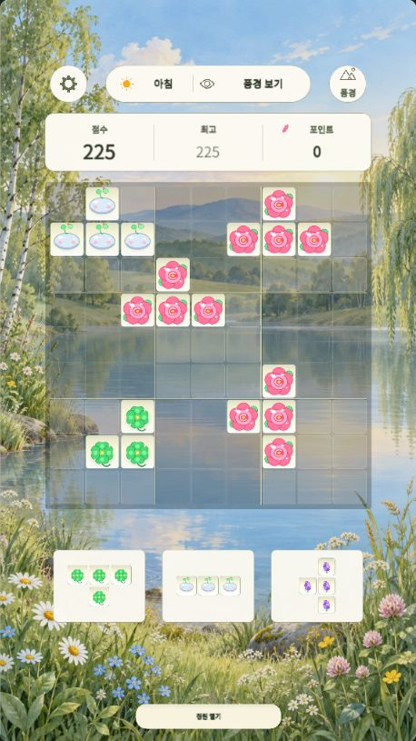

A GARDEN TO CALL YOUR OWN
정원의 퍼즐GardenPuzzle庭のパズル花园拼图花園拼圖
GARDENPUZZLE · FNDG
꽃과 잎사귀 블록을 놓고, 작은 정원을 채워보세요. 한 줄이 완성되면 꽃잎이 흩날리고, 조합이 이어지면 정원이 더 크게 반짝입니다.Place flowers and leaves, and make a little room to bloom. Complete a line for a shower of petals, then discover combinations that light up the garden.花や葉のブロックを置いて、小さな庭を彩りましょう。一列そろうと花びらが舞い、組み合わせが決まると庭がいっそう輝きます。摆放花朵与叶片方块，装点小小的花园。填满一行，花瓣纷飞；组合成功，花园便绽放更多光彩。擺放花朵與葉片方塊，裝點小小的花園。填滿一行，花瓣紛飛；組合成功，花園便綻放更多光彩。
웹 버전 무료 공개 · Android 버전 출시 준비 중Free web version · Android release in preparationWeb版を無料公開 · Android版はリリース準備中网页版免费开放 · Android版准备发布中網頁版免費開放 · Android版準備發佈中
첫 실행 시 약 100MB의 게임 데이터를 불러옵니다.The first load downloads about 100 MB of game data.初回は約100MBのゲームデータを読み込みます。首次加载需下载约100MB的游戏数据。首次載入需下載約100MB的遊戲資料。

잠깐 쉬어가는, 나만의 정원A little room to slow downひと息つける、自分だけの庭慢下来，走进自己的小花园慢下來，走進自己的小花園
아침부터 밤까지Morning to night朝から夜へ从清晨到夜晚從清晨到夜晚
23개 언어 옵션23 language options23の言語設定23种语言选项23種語言選項
HOW TO PLAY
이렇게 즐겨요A simple way to unwind遊び方はシンプル轻松上手輕鬆上手

블록을 놓아요Make roomブロックを置く摆放方块擺放方塊
아래의 블록을 9×9 보드의 빈 곳으로 끌어 놓으세요. 블록 세 개를 모두 쓰면 다음 세트가 나옵니다.Drag blocks from the tray onto empty spaces in the 9×9 board. Use all three pieces to receive the next set.下のブロックを9×9の盤面の空きマスへドラッグ。3つすべて使うと次のセットが出てきます。将下方的方块拖到9×9棋盘的空位。三个方块全部用完后，就会出现下一组。將下方的方塊拖到9×9棋盤的空位。三個方塊全部用完後，就會出現下一組。
한 줄, 혹은 작은 정원Complete a line or a square一列、または小さな区画を完成填满一行或一个小区域填滿一行或一個小區域
가로·세로 한 줄이나 표시된 3×3 구획을 채우면 사라집니다. 꽃과 잎의 조합에 따라 색다른 연출과 추가 점수를 만나보세요.Fill a row, column or marked 3×3 box to clear it. Flower and leaf combinations bring different effects and bonus points.横一列、縦一列、または区切られた3×3の区画を埋めると消えます。花や葉の組み合わせで演出とボーナス点が変わります。填满横行、竖列或标出的3×3区域即可消除。花与叶的不同组合会带来不同特效和额外分数。填滿橫行、直列或標出的3×3區域即可消除。花與葉的不同組合會帶來不同特效和額外分數。
서두르지 않아도 괜찮아요Take your time急がなくて大丈夫不用着急不用著急
시간 제한은 없어요. 남은 블록을 더는 놓을 수 없을 때 한 판이 끝납니다. 모은 포인트로 새로운 풍경을 열어보세요.There is no timer. A round ends when none of your remaining pieces fit. Spend earned points to unlock new scenery.時間制限はありません。残りのブロックがどれも置けなくなると終了。集めたポイントで新しい風景を開きましょう。没有时间限制。当剩余方块都无法放置时，本局结束。用积累的点数解锁新的风景吧。沒有時間限制。當剩餘方塊都無法放置時，本局結束。用累積的點數解鎖新的風景吧。
FOUR TIMES OF DAY
블록을 놓는 동안, 풍경도 천천히Let the scenery unfold遊ぶうちに、景色もゆっくり変わる一边拼图，一边看风景变换一邊拼圖，一邊看風景變換
아침, 오후, 저녁, 밤. 플레이하며 시간대가 바뀌고, 들판 위로 새와 나비가 지나갑니다. 산, 들, 강, 설원의 배경은 모은 포인트로 열 수 있어요.Morning, afternoon, evening and night unfold as you play, with birds and butterflies over the meadow. Unlock mountain, field, river and snowfield backgrounds with earned points.朝、昼、夕方、夜。プレイに合わせて時間帯が移り、草原には鳥や蝶が訪れます。山、野原、川、雪原の背景はポイントで開放できます。清晨、午后、傍晚、夜间，随游玩逐渐变化，鸟与蝴蝶掠过草地。山、原野、河流和雪原背景可以用积累的点数解锁。清晨、午後、傍晚、夜間，隨遊玩逐漸變化，鳥與蝴蝶掠過草地。山、原野、河流和雪原背景可以用累積的點數解鎖。
웹에서는 산·들·강·설원 배경을 각각 17,000포인트로 열 수 있습니다. 기준 모델에서 약 1시간 플레이 분량에 해당하는 가격이며, 실제 획득 속도는 플레이 방식과 보상에 따라 달라집니다. 포인트는 한 판을 마친 뒤 적립됩니다.On the web, each mountain, field, river or snowfield background costs 17,000 points. The price is based on roughly one hour of play in our reference model; your pace and rewards will vary. Points are credited after a round ends.Web版では山・野原・川・雪原の背景をそれぞれ17,000ポイントで開放できます。基準モデルで約1時間のプレイに相当する価格ですが、獲得速度は遊び方や報酬によって変わります。ポイントは1ラウンド終了後に加算されます。网页版的山、原野、河流和雪原背景各需17,000点数。价格以参考模型中约一小时的游玩为基准，实际获取速度会因玩法和奖励而异。点数在每局结束后结算。網頁版的山、原野、河流和雪原背景各需17,000點數。價格以參考模型中約一小時的遊玩為基準，實際獲取速度會因玩法和獎勵而異。點數在每局結束後結算。


웹 버전 안내About the web versionWeb版について网页版说明網頁版說明
최고점수, 정산한 포인트, 해금한 배경과 설정은 이 브라우저에 저장됩니다. 진행 중인 보드는 저장되지 않아 페이지를 새로 열면 새 게임이 시작됩니다. 사이트 데이터를 지우면 저장된 기록도 지워지며, Android와 연동되지 않습니다.Best scores, settled points, unlocked backgrounds and settings are saved in this browser. The current board is not saved; reopening starts a new game. Clearing site data removes these records. Saves do not sync with Android.最高点、精算済みのポイント、開放した背景、設定はこのブラウザに保存されます。途中の盤面は保存されず、開き直すと新しいゲームが始まります。サイトデータを消すと記録も消えます。Android版とは同期しません。最高分、已结算点数、已解锁背景和设置保存在此浏览器中。当前棋盘不会保存，重新打开会开始新游戏。清除网站数据也会清除记录，且不与Android版同步。最高分、已結算點數、已解鎖背景和設定儲存在此瀏覽器中。目前棋盤不會儲存，重新開啟會開始新遊戲。清除網站資料也會清除紀錄，且不與Android版同步。
웹 버전에서는 현금 결제를 제공하지 않습니다. 고양이 정원은 모바일용 유료 세트로 별도 제공 예정이며, 포인트로는 열리지 않습니다. Android 버전의 스토어 출시는 추후 안내합니다.Cash purchases are unavailable on the web. The cat garden is planned as a separate paid mobile set and cannot be unlocked with points. Android store release details will follow.Web版では課金機能を提供しません。猫の庭はモバイル版の有料セットとして別途提供予定で、ポイントでは開放できません。Android版のストア公開は後日ご案内します。网页版不提供现金购买。猫咪花园计划作为移动版付费套装另行提供，无法用点数解锁。Android商店发布信息将另行公布。網頁版不提供現金購買。貓咪花園計劃作為行動版付費套裝另行提供，無法用點數解鎖。Android商店發佈資訊將另行公佈。
이 게임 플레이 페이지에는 광고나 분석 스크립트를 추가하지 않았습니다. 브라우저의 로컬 저장소를 사용하며, 페이지와 게임 파일은 GitHub Pages에서 제공합니다.This game player page has no advertising or analytics scripts. It uses local browser storage; GitHub Pages serves the page and game files.このゲームページには広告・解析スクリプトを追加していません。ブラウザのローカルストレージを使用し、ページとゲームはGitHub Pagesから配信されます。此游戏页面没有广告或分析脚本，使用浏览器本地存储。页面与游戏文件由GitHub Pages提供。此遊戲頁面沒有廣告或分析指令碼，使用瀏覽器本機儲存空間。頁面與遊戲檔案由GitHub Pages提供。